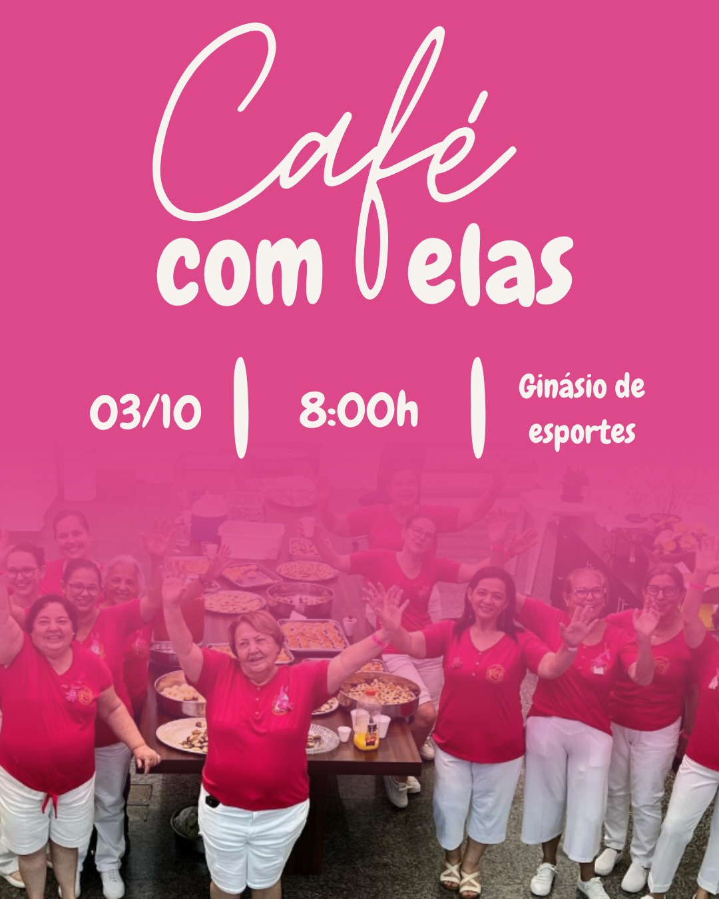

03/10 · 8:00h
Café com Elas
Ginásio de Esportes
A Rede realiza ações de apoio e também produz alimentos com o trabalho das voluntárias. O site ajuda a apresentar esse trabalho e aproximar o público.
Ajuda com leite, fraldas, Gatorade, gelatina e outros itens necessários.
As entregas de cestas acontecem de 15 em 15 dias.
Eventos ajudam a atrair público, divulgar o trabalho e aumentar a arrecadação.
O site também pode divulgar os produtos produzidos pela Rede.
Massas produzidas pelas voluntárias e vendidas para ajudar na arrecadação de recursos para a Rede. Cada compra contribui para manter as ações de apoio aos pacientes.
Doces e tortas preparados pelas voluntárias para venda. A renda arrecadada ajuda a instituição a continuar oferecendo apoio às pessoas atendidas.
Mini pizzas produzidas para venda em ações da Rede. Ao comprar, você contribui diretamente para fortalecer as campanhas e arrecadações.
Cestas básicas são destinadas às famílias e pessoas atendidas pela Rede que precisam de apoio com a alimentação. As doações ajudam a montar e manter essas entregas.
Roupas e sapatos em boas condições também podem ser doados. Esses itens são encaminhados para pessoas que precisam de apoio e fazem parte das ações solidárias.
A doação de cabelo é outra forma de contribuir com a causa. É uma maneira simples de participar das ações solidárias e apoiar quem enfrenta o tratamento.